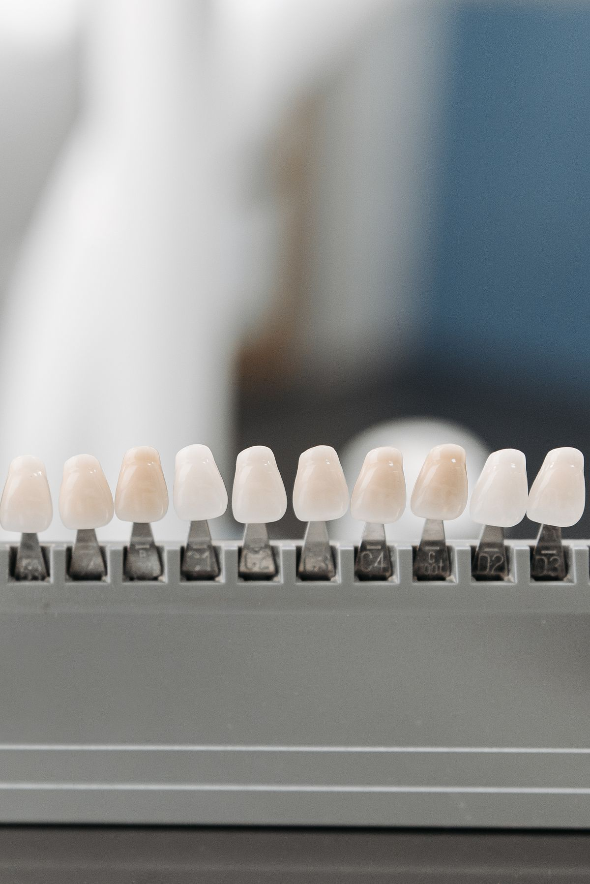
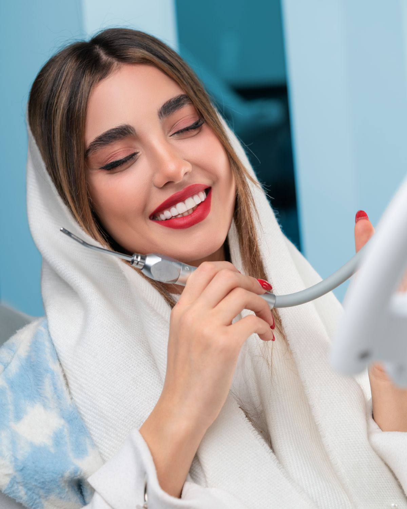
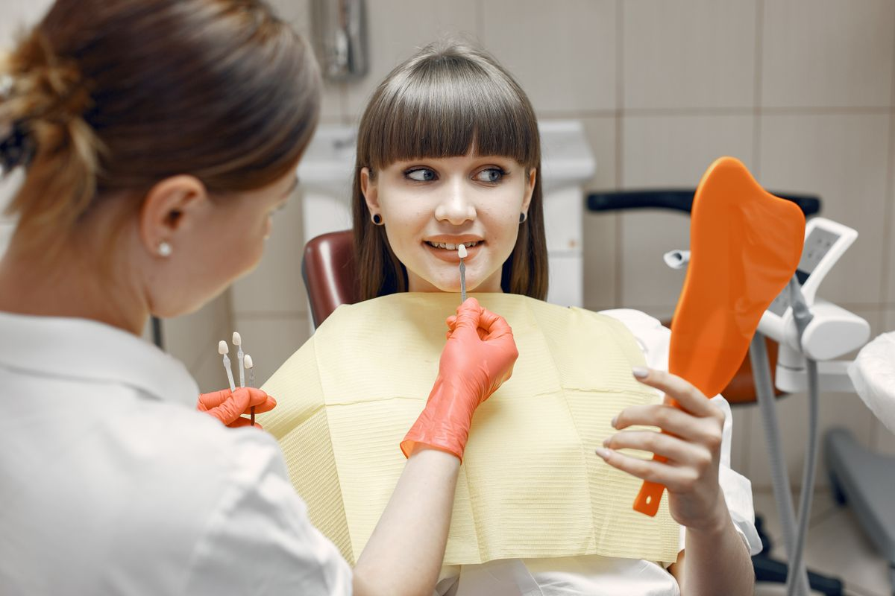
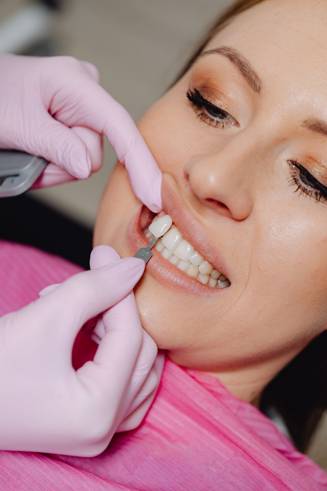
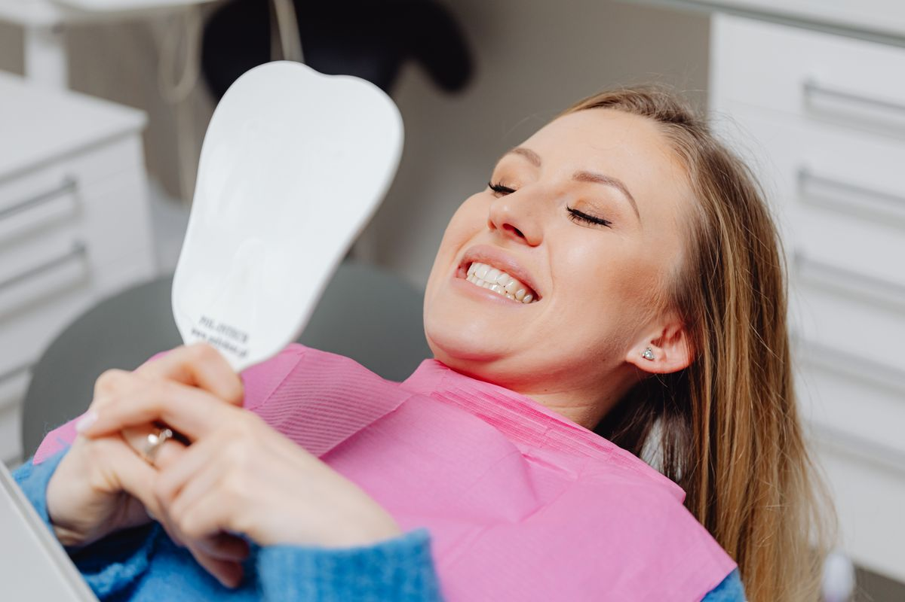
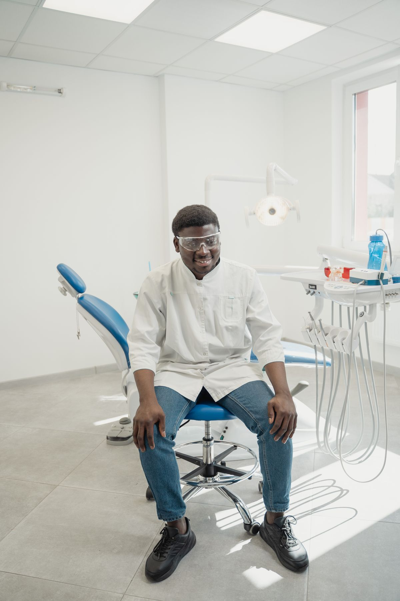
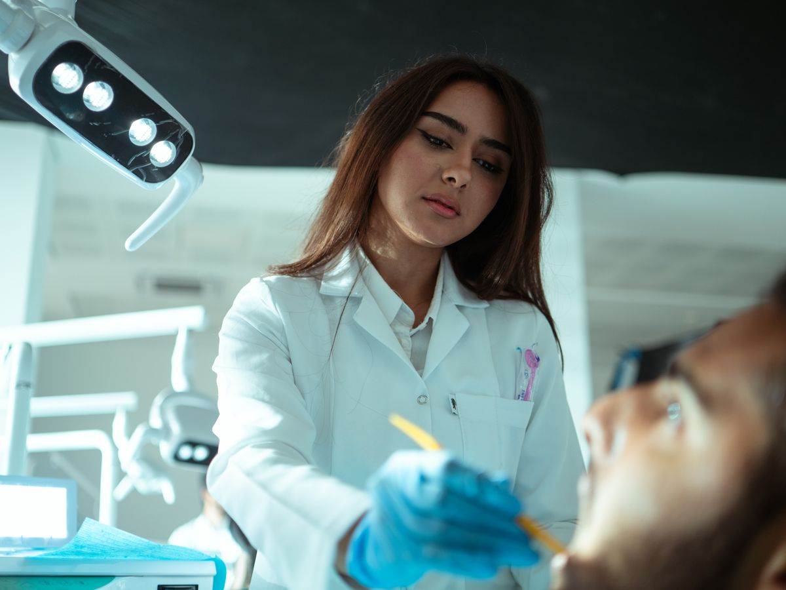
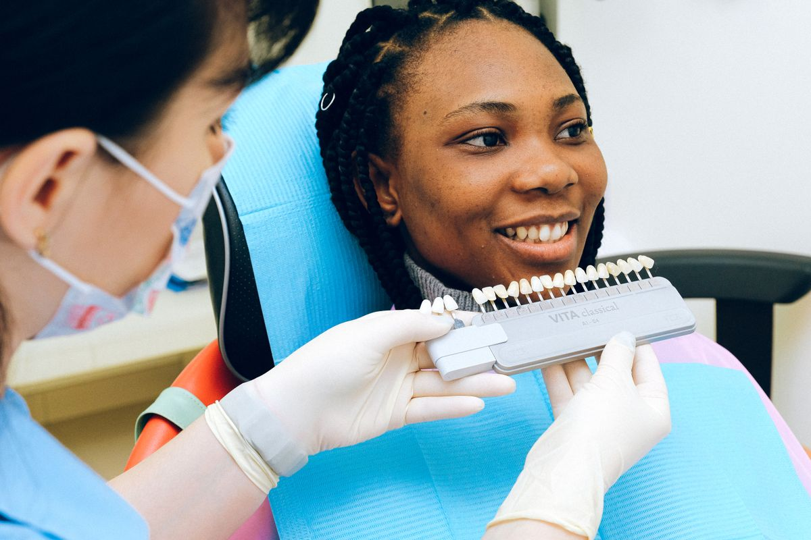

لمینت سرامیکی E.max
پوستههای سرامیکی ظریف برای لبخندی طبیعی و ماندگار؛ انتخاب رنگ و فرم دقیقاً متناسب با چهرهات.
در لاوین، لبخندت شبیه لبخند هیچکس دیگر نمیشود؛ رنگ و فرم دندانها دقیقاً متناسب با چهره خودت انتخاب میشود — با لمینت سرامیکی E.max، کامپوزیت و ایمپلنت.

تمرکز لاوین روی درمانهای زیبایی لبخند است؛ از لمینت و کامپوزیت تا ایمپلنت.

پوستههای سرامیکی ظریف برای لبخندی طبیعی و ماندگار؛ انتخاب رنگ و فرم دقیقاً متناسب با چهرهات.

اصلاح فرم و رنگ دندانها با کامپوزیت؛ نمونهرنگها کنار دندانت گذاشته میشود تا در آینه ببینی و خودت انتخاب کنی.

جای خالی دندان را با ایمپلنت پر کن؛ حسی نزدیک به دندان طبیعی، برای خوردن و خندیدن بدون نگرانی.

لبخندت باید به چهرهات بیاید، نه اینکه شبیه لبخند همه باشد؛ طراحی لبخند در لاوین از همین اصل شروع میشود.

کلینیک دندانپزشکی لاوین در سعادتآباد تهران، با مدیریت دکتر کیهان قدیمی، روی یک چیز تمرکز دارد: ساختن لبخندهایی طبیعی که به چهره صاحبشان میآید.
رنگ و فرم دندانها برای چهره خودت طراحی میشود؛ نه یک قالب ثابت برای همه.
ترکیبی از زیبایی، ظرافت و کیفیت سرامیک؛ برای لبخندی ظریف و ماندگار.
نمونهرنگها کنار دندانهایت دیده میشود و در آینه لبخند میزنی؛ انتخاب نهایی با توست.
برای مشاوره و رزرو، کافی است در واتساپ به شماره ۰۹۱۴۱۲۵۴۷۱۰ پیام بدهی.
دقت در جزئیات، از انتخاب رنگ تا آخرین پولیش.






وضعیت دندانها بررسی میشود و درباره بهترین مسیر درمان، شفاف و بدون عجله صحبت میکنیم.
فرم و رنگ دندانها متناسب با چهرهات انتخاب میشود؛ نمونهرنگ را کنار دندانت و در آینه میبینی.
درمان با دقت و در جلسات مشخص انجام میشود؛ هر مرحله با خودت هماهنگ است.
بعد از درمان تنها نیستی؛ نکات مراقبتی و پیگیری، بخشی از مسیر لبخند توست.
سادهترین راه، پیام در واتساپ یا تماس با شماره ۰۹۱۴۱۲۵۴۷۱۰ است؛ همان شمارهای که برای مشاوره و رزرو در پیج کلینیک هم اعلام شده است.
تهران، سعادتآباد، بلوار دریا، بین رامشه و گلها، پلاک ۶۴. برای مسیریابی یا هر سؤالی، در واتساپ پیام بده.
بستگی به وضعیت دندانها و نتیجهای دارد که دنبالش هستی. در جلسه مشاوره، هر دو گزینه با مزایا و محدودیتهایشان برای خودت توضیح داده میشود تا انتخاب با تو باشد.
E.max یک سرامیک دندانپزشکی است که بهخاطر ظرافت و شفافیت نزدیک به دندان طبیعی، برای ساخت لمینتهای طبیعینما استفاده میشود. در لاوین، رنگ و فرم هر لمینت متناسب با چهره خودت انتخاب میشود.
همین امروز برای مشاوره و رزرو پیام بده.